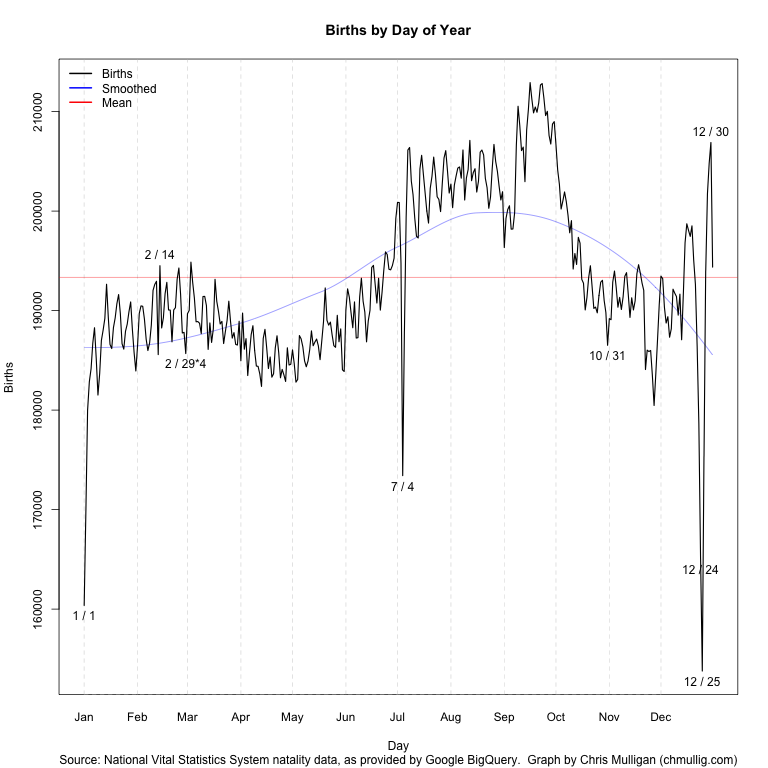

Posted: April 21st, 2015 | Author: chmullig | Filed under: Nerdery | Tags: emoji, emoji translation project | No Comments »
Fred and I are thrilled to announce that the Emoji Translation Project is up on Kickstarter. We want to build google translate for emoji, but to do that we need lots of translations. Help us fund the mechanical turkage to do that, and get a sweet phrasebook.
https://www.kickstarter.com/projects/fred/the-emoji-translation-project
No Comments »
Posted: February 11th, 2015 | Author: chmullig | Filed under: Nerdery | Tags: Columbia, nfs, osx, virtualbox | No Comments »
For Operating Systems we’re using Arch Linux in a VirtualBox guest. One of the issues is dealing with storing code, etc, in a robust way so that it’s easy to work with, and allows you to freely take and restore snapshots without losing work. I first tried using VirtualBox Shared Folders, but they were a real pain in the ass, and apparently don’t work well with permissios and symlinks.
Instead I setup NFS, hosting a directory on my OSX laptop and mounting it inside the virtual machine. I sent some instructions out to students based on my recollection of how to do it, but I haven’t directly tested them. Still, I figured they might be helpful if you came across this page by google searching for something!
I actually ended up using NFS to share files between my mac and virtual machine. I mount a folder in my home directory and put all my work in there, so if I need to restore a snapshot I never need to worry about losing my work. It took a little bit of work, but wasn’t too hard. I mostly sort of followed these directions: http://blog.hostilefork.com/sharing-nfs-into-virtualbox/ along with https://wiki.archlinux.org/index.php/NFS.
On OSX:
1) edit /etc/exports to add a line like:
/Users/clm2186/Documents/Columbia/Current/COMS4118/ -alldirs 127.0.0.1
The above serves my OS directory and all subdirectories only to localhost. Be super careful about the 127.0.0.1, there are other options with using netmasks and stuff, but you can potentially expose your files to almost anyone if you’re not cautious.
2?) I think I had to edit
/System/Library/LaunchDaemons/com.apple.nfsd.plist
to add a line at the end in ProgramArguments for -N. However now I can’t figure out why I did it, or if I really needed to.
<string>-N</string>
3) Start up nfsd: sudo nfsd enable
4) Look in Console.app for all the errors, try to fix them. sudo nfsd restart after tweaking /etc/exports.
5) You can try mounting the share by going into finder -> Go -> Connect to Server and using the url:
nfs://127.0.0.1/Users/clm2186/Documents/Columbia/Current/COMS4118/
9) run id to get the uid (mine was 501) and gid (20)
Here’s my recollection of the VM side steps:
10) Take a snapshot of your VM
11) Install NFS:
sudo pacman -S nfs-utils
12) Create another admin user, or make sure you know the root password. I think sudo passwd should change it if you need to.
12) reboot VM
13) sign into root user (or another admin user that can sudo)
14) change the userid of your main user to match the OSX partition (Per the end of http://blog.hostilefork.com/sharing-nfs-into-virtualbox/)
usermod -u [ID] [username].
15) I also changed the groupid, but I doubt it matters much.
16) Sign into your user account
17) We need to make a directory for mounting the nfs share:
mkdir ~/osnfs
18) edit /etc/hosts to add a DNS lookup for the host OSX side:
10.0.2.2 osxhost
18a) You can figure it out by looking up your gateway inside arch with `ip route show` and looking at the via line
18) Now edit /etc/fstab to add the mapping from nfs to ~/osnfs:
host:/Users/clm2186/Documents/Columbia/Current/COMS4118 /home/clm2186/osnfs nfs rsize=16384,wsize=16384,timeo=14,nolock,_netdev 0 0
#note, if you have a space in the NFS path use \040, which is the ASCII value of space in octal…
19) then finally you’re ready to mount it!!!
sudo mount ~/osnfs
20) Once you get it working, probably take a snapshot.
The only known issue I have is that I seem to need to manually mount it with `sudo mount ~/osnfs` every time I reboot.
Ok, I just realized I said this wasn’t that bad, and it’s like 20 crazy steps. However, it really wasn’t too bad, and could be done in probably only 30 minutes if you do it cleanly. It wasn’t nearly as bad as what doing this sort of thing can become: http://xkcd.com/349/
No Comments »
Posted: May 15th, 2013 | Author: chmullig | Filed under: Nerdery, Philosophising | Tags: rage, stackexchange, stackoverflow | No Comments »
How do I know a StackExchange Q&A is worth reading? It’s been closed.
StackExchange, particularly the incredibly popular stack overflow, is an incredibly resource. However it’s rapidly being ruined by overly zealous moderators who believe themselves to be the arbiters of what goes where. Almost every good answer that I find on stackexchange (that’s not a very small subset of issues with specific programming languages), is marked as closed. The entire StackExchange network is devolving into a ridiculous set of arbitrary restrictions no user can possibly understand. Programmers.SE was intended to be the more general extension of StackOverflow, but now it seems very narrowly defined and arbitrary, such that it has nothing to do with programmers and is, instead, about Computer Science algorithm design? Oh, but also some business development issues. But definitely NOT career issues. And, obviously, definitely not technology issues.
It’s come to the point where I consider posting on a stackexchange site, but assume my question will be closed and simply decide not to ask it instead. How are these overly zealous, and generally rude and dismissive, moderators helping the world?
No Comments »
Posted: December 16th, 2012 | Author: chmullig | Filed under: Nerdery, School | Tags: Columbia, data, data science, kagg, kaggle, python, r, statistics | 1 Comment »
The semester is over, so here’s a little update about the Intro to Data Science class (previous post).
Kaggle Final Project
The final project was a Kaggle competition to predict standardized test essay grades. Although I still had lots of ideas, when I wrapped up a week early I was in first on the public leaderboard, and maintained that to the end. After it was over the private results gave first to Maura, who implemented some awesome ensembling. For commentary take a look at Rachel’s blog post. There’s a bit of discussion in the forum, including my write up of my code.
Visualization
During the competition I maintained a visualization of the leaderboard, which shows everyone’s best scores at that moment. Will Cukierski at Kaggle appreciated it, and apparently the collective impetus of Rachel and I encouraged them to make a competition out of visualizing the leaderboard! See Rachel’s blog post about it for some more info (and a nice write up about my mistakes).
Now back to studying for finals…
1 Comment »
Posted: November 7th, 2012 | Author: chmullig | Filed under: Nerdery, School | Tags: Columbia, data science, graphing, kaggle, r | 3 Comments »
This semester I’m auditing Rachel Schutt’s Intro to Data Science class. I originally registered for it, but at the end of the add/drop period decided I wasn’t confident in my academic background, and wasn’t sure about the workload that would be required. In retrospect it was a mistake to drop it. However I have been attending class as I can (about half the time).
The final project, accounting for most of the grade, is a Kaggle competition. It’s based on an earlier competition, and the goal is to develop a model to grade standardized test essays (approximately middle school level). As an auditor Rachel asked me not to submit, but my cross-validation suggests my model (linear regressions with some neat NLP derived features) is still besting the public leaderboard (Quadratic Weighted Kappa Error Measure of .75), but who knows.
I thought I could easily adjust my MITRE competition leaderboard graph to Kaggle’s CSV, and it turned out to be pretty easy. The biggest issue ended up being that MITRE scored 0 to 100, and this scores 0 to 1. That had some unintended consequences. launchd + python + R should upload this every hour or so (when my laptop is running).
I’m frankly surprised Kaggle hasn’t done something like this before. Maybe if I have a bored evening I’ll try to do it in D3, which should look much nicer.

Update, 12/16: I’ve posted a followup after the end of the semester.
3 Comments »
Posted: June 7th, 2012 | Author: chmullig | Filed under: Nerdery, School | Tags: birthday, programming, r, statistics | 17 Comments »
Andrew Gelman has posted twice about certains days being more or less common for births, and lamented the lack of a good, simple visualization showing all 366 days.
Well, I heard his call! My goal was simply a line graph that showed
Finding a decent public dataset proved surprisingly hard – very few people with large datasets seem willing to release full date of birth (at least for recent data). I considered voter files, but I think the data quality issues would be severe, and might present unknown bias. There’s some data from the CDC’s National Vital Statistics System, but it either only contains year and month, or isn’t available in an especially easy to use format. There’s some older data that seemed like the best bet, and which others have used before.
A bit more searching revealed that Google’s BigQuery coincidentally loads the NVSS data as one of their sample datasets. A quick query in their browser tool and export to CSV and I had the data I wanted. NVSS/google seems to include only the day of the month for 1/1/1969 through 12/31/1988. More recent data just includes year and month.
SELECT MONTH, DAY, SUM(record_weight)
FROM [publicdata:samples.natality]
WHERE DAY >= 1 AND DAY <= 31
GROUP BY MONTH, DAY
ORDER BY MONTH, DAY |
Some basic manipulation (including multiplying 2/29 by 4 per Gelman’s suggestion) and a bit of time to remember all of R’s fancy graphing features yielded this script and this graph:
See update at bottom!

I’ve labeled outliers > 2.3 standard deviations from the loess curve (which unfortunately I should really predict “wrapping” around New Years…), as well as Valentine’s and Halloween. You can see by far the largest peaks and valleys are July 4th, Christmas, and just before/after New Years while Valentine’s and Halloween barely register as blips.
It’s possible there data collection issues causing some of this – perhaps births that occurred on July 4th were recorded over the following few days? The whole thing is surprisingly less uniform than I expected.
Simulating Birthday Problem
I also wanted to simulate the birthday problem using these real values, instead of the basic assumption of 1/365th per day. In particular I DON’T multiply Feb 29th by 4, so it accurately reflects the distribution in a random population. This is data for 1969 to 1988, but I haven’t investigated whether there’s a day of week skew by selecting this specific interval as opposed to others, this is just the maximal range.
I did a basic simulation of 30,000 trials for each group size from 0 to 75. It works out very close to the synthetic/theoretical, as you can see in this graph (red is theoretical, black is real data). Of note, the real data seems to average about 0.15% more likely than the synthetic for groups of size 10-30 (the actual slope).

I’ve also uploaded a graph of the P(Match using Real) – P(Match using Synthetic).

If you’re curious about the raw results, here’s the most exciting part:
| n |
real |
synthetic |
diff |
| 10 |
11.59% |
11.41% |
0.18% |
| 11 |
14.08% |
14.10% |
-0.02% |
| 12 |
16.84% |
16.77% |
0.08% |
| 13 |
19.77% |
19.56% |
0.21% |
| 14 |
22.01% |
22.06% |
-0.05% |
| 15 |
25.74% |
25.17% |
0.57% |
| 16 |
28.24% |
27.99% |
0.25% |
| 17 |
31.81% |
31.71% |
0.10% |
| 18 |
34.75% |
33.76% |
0.98% |
| 19 |
37.89% |
37.90% |
-0.01% |
| 20 |
40.82% |
40.82% |
0.00% |
| 21 |
44.48% |
44.57% |
-0.09% |
| 22 |
47.92% |
47.45% |
0.47% |
| 23 |
50.94% |
50.80% |
0.14% |
| 24 |
53.89% |
53.79% |
0.10% |
| 25 |
57.07% |
56.76% |
0.31% |
| 26 |
59.74% |
59.75% |
-0.01% |
| 27 |
62.61% |
63.00% |
-0.40% |
| 28 |
65.88% |
65.26% |
0.63% |
| 29 |
68.18% |
67.85% |
0.32% |
| 30 |
70.32% |
70.49% |
-0.18% |
| 31 |
73.00% |
72.73% |
0.27% |
| 32 |
75.37% |
75.65% |
-0.28% |
| 33 |
77.59% |
77.63% |
-0.04% |
| 34 |
79.67% |
78.86% |
0.81% |
| 35 |
81.44% |
81.24% |
0.19% |
| 36 |
83.53% |
82.79% |
0.74% |
| 37 |
84.92% |
84.52% |
0.41% |
| 38 |
86.67% |
86.62% |
0.05% |
| 39 |
87.70% |
88.09% |
-0.39% |
| 40 |
89.07% |
88.88% |
0.19% |
| 41 |
90.16% |
90.48% |
-0.32% |
Update
Gelman commented on the graph and had some constructive feedback. I made a few cosmetic changes in response: rescaled so it’s relative to the mean, removing the trend line, and switching it to 14 months (tacking December onto the beginning, and January onto the end). Updated graph:

17 Comments »
Posted: April 8th, 2012 | Author: chmullig | Filed under: personal | Tags: Daniel Cregg, Easter, James Bond, tuxedo | 1 Comment »
In celebration of Easter we dyed some eggs today. Since everything looks better in a tuxedo, why not eggs too?
"I suggest you choose your next witticism wisely, it may be your last."
"Do you expect me to talk?"

"No, Mister Bond, I expect you to dye!"

Gurggl! Gurggl mrrphghl!

You only live twice
If you’re not sure why Bond must dye, this may help.
1 Comment »
Posted: March 25th, 2012 | Author: chmullig | Filed under: Nerdery | Tags: apple, humor | No Comments »
Dear.
I am T Cook,Director of the Apple inc, california. A man by the name of
Steven Jobs amassed a deposit of Ninety seven billion six Hundred million
United State Dollar $97,600,000,00 and he died leaving behind no next of
kin, am ready to share 60/40 with you if you choose to stand as my deceased
client next of kin.if you are interested please notify to send to me this
information via this mail tcook@hotmail.com
1. YOUR NAME:
2. YOUR RESIDENT ADDRESS:
3. YOUR OCCUPATION:
4. YOUR PHONE NUMBER:
5. DATE OF BIRTH:
6. COUNTRY OF RESIDENT:
Mind you your names and address will be used by my Attorney to prepare the
needed documents that will back you up as the beneficiary of my deceased
client funds.I wait to hear from you anyway,I have
spoken my honest mind to you this day.
Best Regards,
Mr.Tim Cook
No Comments »
Posted: January 18th, 2012 | Author: chmullig | Filed under: Nerdery, Philosophising, School | Tags: cognition, Columbia, facebook | No Comments »
I wrote this as an Op-Ed for the last progression of University Writing. Posted here to share.
A recent study found that 87% of US undergraduates are on Facebook for an average of 93 minutes daily. At 11 hours a week that’s nearly as long as many of us spend in class. If 12 hours of classroom time is supposed to not just teach us facts but also train us to become more complex thinkers why do we pretend that 11 hours of Facebook won’t have an affect, too? Facebook asks us to constantly sift through posts, skim, evaluate, and make microscopic comments. By using Facebook we are training our minds to condense all issues into easily “like”-able one-liners, rather than complex essays.
During finals last month many of us turned to Facebook to relieve stress. Many students, including myself, found that Facebook became not a limited relief valve but a means of procrastination. By the night before an exam we thought our only recourse was to block Facebook. Then, finally, our true academic selves would shine in blissful focus and productivity.
If only it was that easy. The distraction and inability to focus that led us to block Facebook wasn’t because we were using Facebook that night. It was the result of our brain adapting to excel at the Facebook friendly tasks we demanded of it, at the expense of less frequent tasks, such as deep reading. After so many hours on Facebook over so many months the Facebook way of shallow thinking was dominant. The focused contemplative mindset became a difficult to achieve anomaly. The night before a paper was due was simply too late to change anything. Even though we were offline we carried Facebook’s in our cognition.
Any new intellectual technology, including Facebook, encourages certain ways of thinking and discourages others. The invention of writing allowed humanity to easily store and retrieve information, a laborious process in oral cultures, and in turn led to an explosion of knowledge. However Socrates, in Plato’s Phaedrus, warns of the cognitive downside to writing by retelling the legend of king Thalmus, who, upon receiving the gift of writing from the god Theuth immediately questions the tradeoff it requires. Readers, Socrates says, will “be thought very knowledgeable when they are for the most part quite ignorant” because there was no oral instruction, and therefore, in his opinion, no deep learning. Writing fundamentally changed how we think. Today Facebook is changing it again. It encourages us to think in terms of connections, which may be advantageous in an increasingly interdisciplinary world, but it discourages deep reading, analysis, and debate. We must acknowledge these changes, and then adapt to them.
Facebook has many advantages, such as staying in touch with friends & family. However research, and common sense, suggest that large amounts of unfocused Facebook browsing damages our ability to concentrate, to understand complex ideas, and to develop our own ideas. Must we choose to either concede our thought patterns to Mark Zuckerberg, or abandon Facebook entirely? Neither is a great choice.
Instead of simply embracing or abandoning Facebook take the opportunity presented by the new semester to assess your use over the long run. What benefits does it provide you? How can you maximize those benefits, while reducing the costs? By becoming a conscientious user today, by finals at the end of the semester your brain will be better trained to focus and think richer thoughts.
Being deliberate about Facebook isn’t easy, but hopefully a few of these techniques, which helped me, will help you. Schedule a concentrated block of Facebook time rather than browsing whenever the urge strikes; this shifts Facebook into a hobby rather than a shameful timewasting habit. When you’re off Facebook, be off Facebook; avoid the siren call of a quick status post, “Studying sooooo hard at Butler!” Adjust your Facebook settings to reduce notification emails; it’s much harder to resist temptation when it thrusts itself into your inbox. Don’t use Facebook as a study break; it forces you into the skim-evaluate-quip mindset rather than read-analyze-write. Plus, just like potato chips, it’s awfully hard to limit it to “just 2 minutes.” Experiment with different ways to control your use, and see what works for you.
Facebook will one day be passé, but whatever replaces it will affect our cognition, just like speech, writing, email, and Facebook itself already have. By first understanding the medium, and then deliberately engaging with it, we can attempt to capture the benefits and avoid the harmful effects.
No Comments »
Posted: October 15th, 2011 | Author: chmullig | Filed under: Uncategorized | No Comments »
Apparently Siri is good friends with Eliza. Er, except Eliza is retired these days… Well, I’m glad she has a friend at least.
No Comments »


{kind=link}
{kind=link}
{kind=link}
{kind=link}
{kind=link}
{kind=link}
{kind=link}
{kind=link}